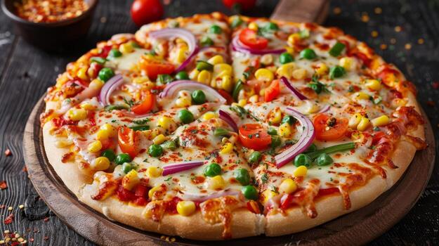

Home
Pizza

Pizza is a beloved culinary classic, featuring a crisp, oven-baked crust layered with rich tomato sauce and melted, bubbly mozzarella cheese. Finished with savory toppings like pepperoni, fresh basil, or crisp vegetables, every slice delivers a satisfying blend of textures and comforting, savory flavors that make it an enduring global favorite for any occasion.
Ingredients -
- Flour
- Yeast
- Water
- Oil
- Sugar and Salt
- Sauce
- Cheese
- Toppings
Steps to make the Pizza -
-
Combine warm water, yeast, sugar, flour, salt, and oil. Knead until smooth, then let rise for 1 hour.
-
Set oven to max heat (475°F–500°F / 245°C–260°C).
-
Stretch dough into a flat 12-inch round.
-
Spread tomato sauce, add shredded mozzarella, and scatter toppings.
-
Bake for 10–12 minutes until crust is browned and cheese bubbles. Slice and serve.